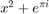
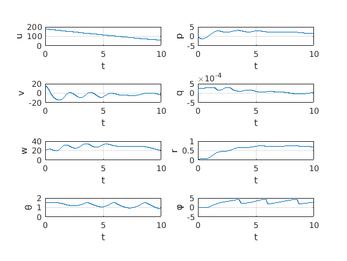

SECTION TITLE
DESCRIPTIVE TEXTs
- ITEM1
- ITEM2 
clear clc global rho global sup global b global c global g global m global de global Ix global Iy global Iz g = 9.8; rho = 1.04 ; sup = hl20.sref; b = hl20.bref ; % en metros c = hl20.cbar ; % en metros m = hl20.mass + hl20.fuel ; Ix = hl20.Ixx ; Iy = hl20.Iyy ; Iz = hl20.Izz ; V = 180; de = -10 ; %angulo en grados alphacero = 7 ; %angulo en grados bethacero = 5 ; %angulo en grados titacero = 1.5 ; %angulo en radianes uo = V * cosd(alphacero) * cosd(bethacero); vo = V * sind(bethacero); wo = V * sind(alphacero) * cosd(bethacero); y0 = [ uo vo wo 0 0 0 titacero 0]; t = [0 10];
[t,y] = ode45(@f,t,y0);
figure('Name','Alpha, Betha') hold on plot(t,alpha,'r') plot(t,betha,'b') grid on legend('alpha','betha')
%y = [ uo vo wo po qo ro ficero titacero ]; figure('Name','Results') subplot (421), plot(t,y(:,1)), xlabel('t'), ylabel('u'), grid on subplot (422), plot(t,y(:,4)), xlabel('t'), ylabel('p'), grid on subplot (423), plot(t,y(:,2)), xlabel('t'), ylabel('v'), grid on subplot (424), plot(t,y(:,5)), xlabel('t'), ylabel('q'), grid on subplot (425), plot(t,y(:,3)), xlabel('t'), ylabel('w'), grid on subplot (426), plot(t,y(:,6)), xlabel('t'), ylabel('r'), grid on subplot (427), plot(t,y(:,7)), xlabel('t'), ylabel('θ'), grid on subplot (428), plot(t,y(:,8)), xlabel('t'), ylabel('φ'), grid on